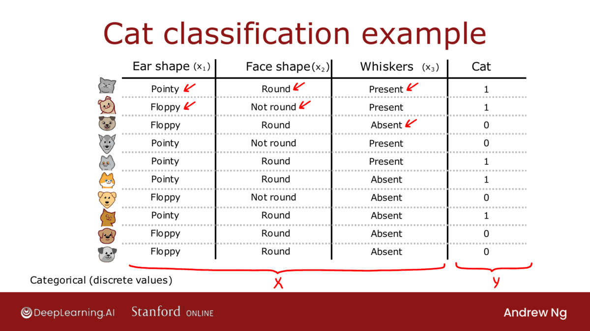

Theory of Decision Tree
Decision Tree is like a flowchart that represents data in a hierarchical structure. Each node in the structure represents a test node for feature, where the node classifies the provided test.
Let us take the example of Rain or Sunny, the features are Humidity and Wind. The below image clearly demonstrates the point:

This is how the Decision Tree functions. Let us understand more about Decision Tree.
Decision Tree Learning
There are mainly two decisions that are taken care when developing a Decision Tree model:
Decision 1: How to choose what feature to split on at each node?
Maximize purity (or minimize impurity)
Purity: The decision to split at each node is made according to the metric called purity. A node is 100% impure when a node is split evenly 50/50 and 100% pure when all of its data belongs to a single class.
The proportion of data elements in the group that belong to the subset is the basis for the idea of purity in the construction of decision trees.
Decision 2: When do you stop splitting?
When a node is 100% one class.
When splitting a node will result in the tree exceeding a maximum depth.
When improvements in purity score are below a threshold.
When number of examples in a node is below a threshold.
Let's see through a gif:

Measuring Purity
Entropy is measured by using the probability of the model that predicted the classes. Let us see through a Diagram:

As you can see in the above diagram that the entropy graph looks like downward convex. Here, when the ratio is 50/50 then the entropy is at the max. Rest of the area in the entropy graph shows a part of how much entropy it produces.
Let us look at the equation for entropy:

There is also another equation that is also used for impurity: Gini index.
Information Gain
The information gain criteria lets you decide how to choose one feature to split a one-node.
Informatin gain is used for testing the split that is formulated at the node. The node is feature like ear shape, face shape or whiskers in our case of Cat Classification.
The amount of information improved in the nodes prior to splitting them for further decision-making is the definition of the information gained in the decision tree.

Let us now see how this equation is used for testing the Decision Tree individually:

Putting it together
So, if we take the example Cat Classification and we have features Ear shape, Face shape and Whiskers. Let's look at how the process of Building a Decision Tree is done using the following features.
Start with all examples at the root node.
Calculate information gain for all possible features, and pick the one with the highest information gain.
Split dataset according to selected feature, and create left and right branches of the tree.
Keep repeating splitting process until stopping criteria is met:
When a node is 100% one class.
When splitting a node will result in the tree exceeding a maximum depth.
Information gain from additional splits is less than threshold.
When number of examples in a node is below a threshold.
There is another property of Tree data structure, it is called as a Recursive data structure. Recursive algorithm is the way a Decision Tree at the root is by building other smaller decision trees in the left and the right sub-branches.
Let's see the Process through a Gif:

If you want to implement the Decision Tree from scratch then the recursive algorithm turns out to be one of the steps that must be implemented.
How to choose the maximum depth parameter?: There are many different possible choices, but some of the open-source libraries will have good default choices that you can use. One intuition is, the larger the maximum depth, the bigger the decision tree you're willing to build. This is a bit like fitting a higher degree polynomial or training a larger neural network. It lets the decision tree learn a more complex model, but it also increases the risk of overfitting if this fitting a very complex function to your data. In theory, you could use cross-validation to pick parameters like the maximum depth, where you try out different values of the maximum depth and pick what works best on the cross-validation set. Although in practice, the open-source libraries have even somewhat better ways to choose this parameter for you. another criteria that you can use to decide when to stop splitting is if the information gained from an additional split is less than a certain threshold. If any feature is split on, achieves only a small reduction in entropy or a very small information gain, then you might also decide to not bother. Finally, you can also decide to start splitting when the number of examples in the node is below a certain threshold. That's the process of building a decision tree.
One Hot Encoding
One hot encoding is a process by which categorical variables are converted into a form that could be provided to ML algorithms to do a better job in prediction.

Continuous Valued Features
Continuous valued features are the features that are numerical. In our case, Cat classification, we have looked into the process with only 3 features which are categorical ear shape, face shape, and whiskers. If we add a new feature weight of the animal. Then, it is Continuous valued feature.
We can plot the weights data and find the point where the Information gain will be high in order to present it as a node with feature weight. What we have observed is that Weight <= 9 is a best point where the Informatin gain is very high. So, we choose that point. Let us look at a image to understand more:

Regression Trees
Decision Trees is not only used for Classification but it is also used for Regression Analysis also. Let us work on the same example, Cat Classification, here the input features will be categorical features (ear shape, face shape and whiskers) and the output features will be Continuous features (Weight).
Let us look at diagram to illustrate more on our point:
We will use the same information gain equation but this time we will use Variance instead of entropy for regression analysis for Decision Tree. This provides us the information in our problem that Ear shape has more weightage to be the root node than other features face shape and whiskers.
Sampling with Replacement
As we have discussed the weakness of using a single decision tree is that the decision tree can be highly sensitive to small changes in the data. So, sampling with replacement provides a way to combat this by creating various decision trees with different sets of data with duplicates from the original dataset.
Let us demonstrate with an example, we take 4 coins of different colours red, blue, yellow, and green. We put all the coins in a bag and shake it.
Step 1: Take a coin from the bag without looking. Let us assume it is red. Then, put the it back into the bag
Step 2: Again take a coin from the bag without looking. Let us assume it is red again. Then, put it back into the bag. As our original set of coins were 4. We would repeat the step of taking and putting it back 4 times.
Step 3: The above 2 steps must be repeated to generate the following datasets:
red, red, yellow, blue (Note: No green.)
red, yellow, blue, and green (We got the original dataset)
yellow, green, green, and green (we got green 3 times)
blue, blue, blue, and blue (we got only blue dataset)
The above generated datasets using Sampling with Replacement can be used to create different Decision Trees which is the core concept of Tree Ensembles.
Let us learn about the first Tree Ensemble method: Random Forest Algorithm.
Random Forest Algorithm
Let us look at a glimpse of Bagged Decision Tree:
Given training set of size 𝑚
For 𝑏 = 1 to 𝐵:
Use sampling with replacement to create a new training set of size 𝑚
Train a decision tree on the new dataset
This is algorithm is Bagged Decision Tree where 𝑏 and 𝐵 are derived from bag name.
Random forest is derived from this Bagged Decision Tree. In this process there is voting system at all the prediction produced by bagged trees and predicts based on Voting system. Let us look at a diagram to understand better:
At each node, when choosing a feature to use to split, if 𝑛 features are available, pick a random subset of 𝑘 < 𝑛 features and allow the algorithm to only choose from that subset of features.
The best value of k would be .

In this the Bootstrap sampling is also called as Sampling with Replacement as we have discussed earlier. Bootstrap aggregation is grouping of all the predicted class of different trees.
XGBoost
XGBoost is a Gradient Boosting Algorithm that is quite popular among Machine learning practitioners. The intuition behind XGBoost is:
For example, if you're learning to play the piano and you're trying to master a piece on the piano rather than practicing the entire say five minute piece over and over, which is quite time consuming. If you instead play the piece and then focus your attention on just the parts of the piece that you aren't yet playing that well in practice those smaller parts over and over. Then that turns out to be a more efficient way for you to learn to play the piano well. And so this idea of boosting is similar. We're going to look at the decision trees, we've trained so far and look at what we're still not yet doing well on. And then when building the next decision tree, we're going to focus more attention on the examples that we're not yet doing well. So rather than looking at all the training examples, we focus more attention on the subset of examples is not yet doing well on and get the new decision tree, the next decision tree reporting ensemble to try to do well on them. And this is the idea behind boosting and it turns out to help the learning algorithm learn to do better more quickly.
The change that is done to the previous developed algorithm is that we will give more importance to misclassified examples in order to build the next Decision Tree. The process of giving more importance to misclassified examples is more complex, so don't dwell on it. There are many open-source libraries that are developed to implement XGBoost algorithm.
Given training set of size 𝑚
For 𝑏 = 1 to 𝐵:
Use sampling with replacement to create a new training set of size 𝑚
But instead of picking from all examples with equal (1/m) probability, make it more likely to pick examples that the previously trained trees misclassify.
Train a decision tree on the new dataset
Some advantages of using XGBoost algorithms are:
Open source implementation of boosted trees.
Fast efficient implementation.
Good choice of default splitting criteria and criteria for when to stop splitting.
Built in regularization to prevent overfitting.
Highly competitive algorithm for machine learning competitions (eg: Kaggle competitions).
Implementation of XGBoost
Classification
from xgboost import XGBClassifier
model = XGBClassifier()
model.fit(X_train, y_train)
y_pred = model.predict(X_test)
Regression
from xgboost import XGBRegressor
model = XGBRegressor()
model.fit(X_train, y_train)
y_pred = model.predict(X_test)
When to use Decision Tree?
There is always a doubt of when to use Decision Trees and when to use Neural Network. Let us first understand the advantages and disadvantages of each of them:
Decision Tree and Tree Ensembles
Let us discuss some key points:
Works well on tabular (structured) data.
Not recommended for unstructured data (images, audio, text).
Fast, even the ensemble methods are faster than regular Neural Networks.
Small decision trees may be human interpretable.
Neural Network
Works well on all types of data, including tabular (structured) and unstructured data.
May be slower than a decision tree. When you consider the Machine Learning Developement cycle. It takes a lot time to enter the Diagnostics stage which will slow down the entire cycle. For Structured data it would be better to create a Decision Tree as it is fast.
Works with transfer learning.
When building a system of multiple models working together, it might be easier to string together multiple neural networks.